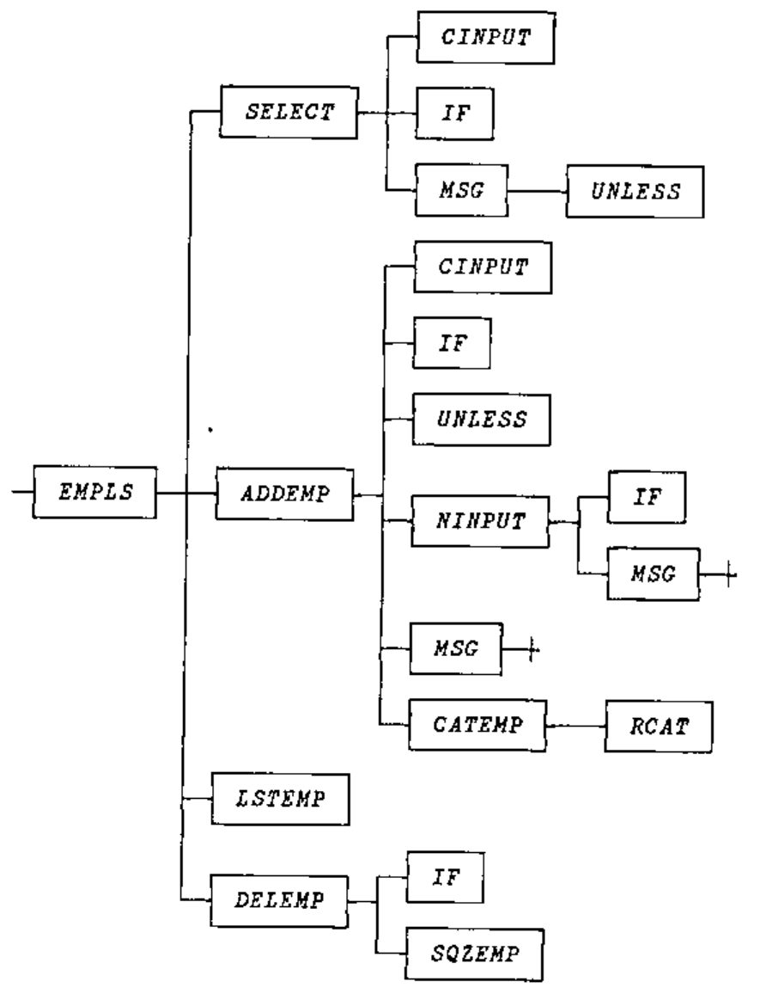
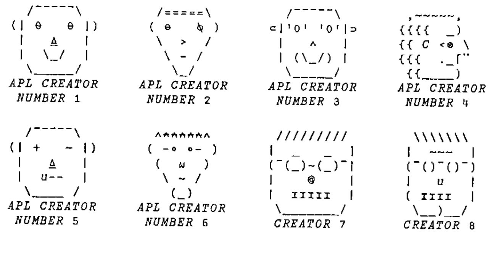

Zark Newsletter Extracts
Vector 16:3, page 27
Transcribed from the printed issue; not yet reviewed. Read it in the PDF of the issue, page 27
Thank you to the few who noticed that in the last issue we reprinted the same crossword (but with the solution ... so it was a bit easier!) Many apologies for this error, this time we should have a new crossword and a continuation of the tree function analysis puzzles. I once again encourage you all to try and shed new light on these problems, particularly in the context of namespaces or even J locales.
UTILITY CORNER: Identifiers Within Functions¶
(The purpose of this column is to make you more productive by introducing you to utility functions. Think of utility functions as APL functions that have names instead of symbols. By expanding your function vocabulary, you’ll be able to write APL code that’s more concise, more efficient, and more readable.)
In last issue’s LIMBERING UP column, we asked you to write a function named ANALYZE that analyses the identifiers used in the function whose name is given as the right argument. Consider this function to be analysed:
∇ IND←CHOICES SELECT PROMPT;R
[1] ⍝ Ask for choice:
[2] ASK:R←CINPUT PROMPT
[3] ⍝ Search choices for 1st char of response:
[4] IND←CHOICES⍳1↑R
[5] ⍝ Ask again if not a valid choice:
[6] →ASK IF(IND>⍴CHOICES)MSG'INVALID CHOICE.'
∇
Here’s an illustration of the ANALYZE function:
)FNS
ANALYSE SELECT
)VARS
No variables
ANALYSE SELECT
)VARS
ARGS FNS IDS LABELS LOCALS RESULT
ARGS
CHOICES
PROMPT
FNS
ANALYSE
SELECT
IDS
ASK
R
CINPUT
PROMPT
IND
CHOICES
R
ASK
IF
IND
CHOICES
MSG
LABELS
ASK
LOCALS
R
RESULT
IND
As you can see, ANALYZE builds six global variables. Each of the variables is a character matrix with one name per row. Short names are left-justified. Here’s what they represent:
FNS |
the names of the functions in the workspace |
RESULT |
the name of the result variable (0 rows if none) |
ARGS |
the names of the argument variables (0, 1 or 2 rows) |
LOCALS |
the names of the variables localised in the header, i.e. preceded by ';' |
LABELS |
the names of the labels, i.e. the names beginning a function line and followed immediately by ':' |
IDS |
the names of all identifiers within the body of the function (all lines but the header), ignoring names within comments or quotes; you may include or ignore label names, at your whim. |
All six character matrices have the same number of columns, namely as many as the longest name in FNS. Any longer names are omitted. Names that begin with the ⎕ symbol, such as ⎕IO or ⎕PW, are omitted.
Here’s one solution to the problem:
∇ ANALYZE FNAME;COLS;CR;HDR;I;LEN;LET;MAX;N;NUM;OK;
START;VC;WID;⎕IO
[1] ⍝ Analyses the identifiers within the function named
[2] ⍝ in FNAME. In particular, the ANALYZE function
[3] ⍝ creates six global variables: FNS, RESULT, ARGS,
[4] ⍝ LOCALS, LABELS, and IDS. Each of the global
[5] ⍝ variables is a character matrix with one name per
[6] ⍝ row. Short names are left-justified, i.e. padded to
[7] ⍝ the right with blanks. Here⍋s what they contain:
[8] ⍝
[9] ⍝ FNS The names of the functions in the workspace
[10] ⍝ RESULT The name of the result variable (0 rows if
[11] ⍝ none)
[12] ⍝ ARGS The names of the argument variables (0, 1,
[13] ⍝ or 2 rows)
[14] ⍝ LOCALS The names of the variables localised in the
[15] ⍝ header, i.e. preceded by ';'
[16] ⍝ LABELS The names of the labels, i.e. the names
[17] ⍝ beginning a function line and followed
[18] ⍝ immediately by a ':'
[19] ⍝ IDS The names of all identifiers within the body
[20] ⍝ of the function (all lines but the header),
[21] ⍝ ignoring names within comments or quotes.
[22] ⍝
[23] ⍝ All size matrices have the same number of columns,
[24] ⍝ namely as many as the longest name in FNS. Any
[25] ⍝ longer names are omitted. Names that begin with the
[26] ⍝ ⎕ symbol, suchas as ⎕IO or ⎕PW, are omitted.
[27] ⍝
[28] ⎕IO←0 ⍝ Origin 0 simplifies the logic a bit
[29] FNS←⎕NL 3 ⍝ Char matrix of fns in the ws
[30] COLS←1↓⍴FNS ⍝ No. cols in each global results
[31] CR←⎕CR FNAME ⍝ Canonical rep (char mat) of fn
[32] WID←⍴HDR←CR[0;] ⍝ Fn header and width of ⎕CR
[33] ⍝ HDR←(HDR⍳'⍝')↑HDR ⍝ In APL2, drop any hdr comment
[34] CR←1 0↓CR ⍝ Body of fn
[35] LEN←('←'∊HDR)×HDR⍳'←' ⍝ Length of result var if any
[36] ⍝ RESULT is 0 or 1 row matrix (0 if too long)
[37] RESULT←(((LEN≤COLS)∧×LEN),COLS)⍴COLS↑LEN↑HDR
[38] HDR←(LEN+×LEN)↓HDR ⍝ Drop result var and '←'
[39] HDR←(+/∨\⌽HDR≠' ')↑HDR ⍝ Delete trailing blanks
[40] LEN←HDR⍳';' ⍝ Length of fn syntax
[41] ARGS←LEN↑HDR ⍝ Select syntax
[42] HDR←LEN↓HDR ⍝ Drop syntax, leaving semicolon
[43] I←(ARGS=' ')/⍳LEN ⍝ Indices of blanks
[44] N←⍴LEN←(I,LEN)-0,I+1 ⍝ Lengths of names in syntax
[45] MAX←⌈/LEN ⍝ Length of longest name
[46] ⍝ Convert to a matrix:
[47] ARGS←(N,COLS)↑(N,MAX)⍴(,LEN∘.>⍳MAX)\ARGS-' '
[48] ⍝ Select args, not fn name, unless too long:
[49] ARGS←((LEN≤COLS)∧(N≥3 1 2)/1 0 1)⌿ARGS
[50] I←(HDR=';')/⍳LEN←⍴HDR ⍝ Indices of semicolons
[51] N←⍴LEN←(1↓I,LEN)-I+1 ⍝ Lengths of locaised names
[52] MAX←⌈/LEN ⍝ Length of longest name
[53] ⍝ Convert to a matrix
[54] LOCALS←(N,COLS)↑(N,MAX)⍴(,LEN∘.>⍳MAX)\HDR-';'
[55] LOCALS←(LEN≤COLS)⌿LOCALS ⍝ Ignore long ones
[56] OK←=\CR≠'''' ⍝ Flag code NOT within quotes
[57] ⍝ Flag code NOT within comments or quotes:
[58] OK←OK∧∧\OK≤CR≠'⍝'
[59] ⍝ Chars that can begin identifier names:
[60] LET←'ABCDEFGHIJKLMNOPQRSTUVWXYZ∆abcdefghijklmnopqrs
tuvwxys⍙'
[61] ⍝ Other valid chars (plus ¯ and _ if allowed):
[62] NUM←'0123456789'
[63] ⍝ Flag any valid chars, adding col for ending IDs:
[64] VC←,(OK∧CR∊LET,NUM),0
[65] ⍝ Flag start and end (+1) of each run:
[66] VC←VC≠¯1↓0,VC
[67] N←⍴IDS←VC/⍳⍴VC ⍝ Convert to indices
[68] IDS←((N÷2),2)⍴IDS ⍝ Two-col mat of start/end inds
[69] CR←,CR,' ' ⍝ Ravel code and pad to match VC
[70] START←IDS[;0] ⍝ Start indices
[71] LEN←IDS[;1]-START ⍝ LEngths of names
[72] ⍝ Must start with a letter, not be too long, and not
[73] ⍝ be preceded by a '⎕' (e.g. ⎕IO):
[74] OK←(CR[START]∊LET)∧(LEN≤COLS)∧'⎕'≠CR[0⌈START-1]
[75] START←OK/START ⍝ Squeeze out bad ones
[76] N←⍴LEN←OK/LEN
[77] IDS←(N×COLS)⍴' ' ⍝ IDS in raveled form
[78] ⍝ I←(⍳LEN[0]),(⍳LEN[1]),(⍳LEN[2]),...:
[79] I←LEN/¯1↓0,+\LEN
[80] I←(⍳⍴I)-I
[81] ⍝ Insert IDS where they belong
[82] IDS[I+LEN/COLS×⍳N]←CR[I+LEN/START]
[83] IDS←(N,COLS)⍴IDS ⍝ Reshape to a matrix
[84] ⍝ Labels start a line and are followed by a colon:
[85] LABELS←((0=(WID+1)|START)∧CR[START+LEN]=':')⌿IDS
∇
Though this function is extensively commented, some additional remarks are in order. We described the ⎕CR (canonical representation) and ⎕NL (name list) system functions in the last issue of the News. The former returns a character matrix image of the function and the latter returns a character matrix of the names of the functions in the workspace (for ⎕NL 3). Let’s trace some of the important lines:
[29] FNS: ANALYZE These are the only functions
SELECT in the workspace
[31] CR: IND←CHOICES SELECT PROMPT;R
⍝ Ask for choice:
ASK:R←CINPUT PROMPT
⍝ Search choices for 1st char of response:
IND←CHOICES⍳1↑R
⍝ Ask again if not a valid choice:
→ASK IF(IND>⍴CHOICES)MSG'INVALID CHOICE.'
[32] HDR: IND←CHOICES SELECT PROMPT;R
[37] RESULT: IND
[39] HDR: CHOICES SELECT PROMPT;R
[41] ARGS: CHOICES SELECT PROMPT
[42] HDR: ;R
[44] LEN: 7 6 6
[49] ARGS: CHOICES
PROMPT
[55] LOCALS: R
[56] OK: 111111111111111111111111111111111111111111
111111111111111111111111111111111111111111
111111111111111111111111111111111111111111
111111111111111111111111111111111111111111
111111111111111111111111111111111111111111
111111111111111111111111000000000000000011
[58] OK: 000000000000000000000000000000000000000000
111111111111111111111111111111111111111111
000000000000000000000000000000000000000000
111111111111111111111111111111111111111111
000000000000000000000000000000000000000000
111111111111111111111111000000000000000011
[64] VC: ,0000000000000000000000000000000000000000000
1110101111110111111000000000000000000000000
0000000000000000000000000000000000000000000
1110111111101010000000000000000000000000000
0000000000000000000000000000000000000000000
0111011011100111111101110000000000000000000
[66] VC: ,0000000000000000000000000000000000000000000
1001111000001100000100000000000000000000000
0000000000000000000000000000000000000000000
1001100000011111000000000000000000000000000
0000000000000000000000000000000000000000000
0100110110010100000011001000000000000000000
[70] START:43 47 49 56 129 133 141 143 216 220 223 228 236
[71] LEN: 3 1 6 6 3 7 1 1 3 2 3 7 3
[74] OK: 1 1 1 1 1 1 0 1 1 1 1 1 1
[75] START:43 47 49 56 129 133 143 216 220 223 228 236
[76] LEN: 3 1 6 6 3 7 1 3 2 3 7 3
[80] I: 0 1 2, 0, 0 1 2 3 4 5, 0 1 2 3 4 5, 0 1 2,
0 1 2 3 4 5 6, 0, 0 1 2, 0 1, 0 1 2 ,
0 1 2 3 4 5 6, 0 1 2
[82] CR[I+LEN/START]
ASKRCINPUTPROMPTINDCHOICESRASKIFINDCHOICESMSG
[83] IDS: ASK
R
CINPUT
PROMPT
IND
CHOICES
R
ASK
IF
IND
CHOICES
MSG
[85] LABELS: ASK
Incidentally, the =\ function, which converts pairs of 0s to runs of 0s, and the ∧\ function, which converts all 1s after the leading 1s to 0s, can be replaced by the ≠\ function, which converts pairs of 1s into runs of 1s , and the ∨\ function, which converts all 0s after the leading 0s to 1s. Here are the two sets of logic:
Current logic:
OK←=\CR≠'''' ⍝ Flag code NOT within quotes
⍝ Flag code NOT within comments or quotes:
OK←OK∧∧\OK≤CR≠'⍝'
⍝ Flag any valid chars, adding col for ending IDs:
VC←,(OK∧CR∊LET,NUM),0
Alternative logic:
NOK←≠\CR='''' ⍝ Flag code within quotes
⍝ Flag code within comments or quotes:
NOK←NOK∨∨\NOK<CR='⍝'
⍝ Flag any valid chars, adding col for ending IDs:
VC←,(NOK<CR∊LET,NUM),0
What happens if you use the ANALYZE function to analyse a function named START?
It won’t work. Why? Because the name START has been localised in the header of the ANALYZE function and is used therein as a variable. Hence, the global definition, the START function, is “shadowed” by the local START variable while ANALYZE is running. In particular, the ⎕NL system function (line [29]) sees START as a variable, not a function, and so does not return it in its list of function names. Likewise, the ⎕CR system function (line [31]) returns an empty character matrix since its argument is the name of a variable, not a function.
This shadowing problem exists for all the names local to ANALYZE, including the argument FNAME and the names of any labels (luckily there aren’t any). How can this problem be avoided?
It can’t. But you can minimise its impact by using bizarre variable names – names that aren’t likely to be used as function names. A name like ⍙67⍙XX is pretty unlikely to be used as a function name. Unfortunately, screwball names like ⍙67⍙XX will tend to make the ANALYZE function pretty unreadable. A good compromise is to use names that are just a little screwy, like ∆START or ∆∆START or ∆START∆.
For now, we’ll leave the ANALYZE function as it is, and pray that we won’t need to analyse any functions with shadowed names.
LIMBERING UP: Identifiers Within Functions¶
(The purpose of this column is to work some flab off your APL midsection. Like muscles, your APL skills can atrophy if not exercised with adequate frequency and variety. This column presents a task for you to perform. Set aside a few minutes from your busy schedule and work the task. Mail in your solution and stay tuned for the results.)
Two issues ago, we introduced a utility function name FNTREE that displays a tree diagram of the subfunctions (their subfunctions) called by a specified function in the workspace. The right argument of FNTREE is the name of the function to be diagrammed. The result is a character matrix of the tree diagram. See over ....

Last issue, we discussed the logic for constructing the tree diagram. This issue (in the UTILITY CORNER column), we discuss the logic for analysing the identifiers used within a function. Next issue, we’ll present the finished product, in which we put it all together. In the meanwhile, one sticky problem remains.
Given the global variables FNS, RESULT, ARGS, LOCALS, LABELS, and IDS generated by the ANALYZE function, you still need to determine which of the identifiers represent subfunctions. In particular, the names in IDS that are found in FNS, but are not found in RESULT, ARGS, LOCALS, or LABELS, are subfunctions.
We’d like to express these subfunctions as a vector of row indices into FNS. But how?
If these six global variables were vectors of identifying numbers, rather than matrices of identifying names, the logic could proceed like this:
⍝ Make the identifiers distinct:
IDS←((IDS⍳IDS)=⍳⍴IDS)/IDS
⍝ Eliminate those that are local:
IDS←IDS~RESULT,ARGS,LOCALS,LABELS
⍝ Consider only those globally defined as functions:
IDS←(IDS∊FNS)/IDS
⍝ Convert to indices into FNS:
IDS←FNS⍳IDS
Straightforward but worthless. The six variables are matrices, not vectors. The dyadic ⍳, ∊, and ~ functions work on vectors, not matrices.
Your task is to write a set of APL expressions that generate the desired result. In particular, incorporate the expressions in a function named SUBFNS, which accepts all six variables (FNS, RESULT, ARGS, LOCALS, LABELS, IDS) as global arguments and which returns as an explicit result the row indices into FNS of the distinct rows of IDS not found in RESULT, ARGS, LOCALS, or LABELS, but found in FNS.
To illustrate, suppose the six variables have the values indicated earlier in this newsletter, except suppose FNS has five rows:
The result (2 3 4) indicates that the only names in IDS that are in FNS but not in RESULT, ARGS, LOCALS, or LABELS are the names found in FNS[2 3 4;].
The SUBFNS function should be as efficient as possible. If your APL system supports nested arrays and you believe a nested solution is the most efficient, you’re welcome to use nested constructs. In APL2 use ⊂[2]MAT to convert a matrix to a vector of vectors; in APL*PLUS, use ↓MAT; in Sharp APL use <⍤MAT.
Please send your solutions (on paper or disk) to:
Vector Production, Brook House
Gilling East
York YO63 4JJ, UK
or via email to Vector Production at apl385@compuserve.com .
We also welcome your version of the completed FNTREE function. Look over the discussions in the last few issues of the Zark APL Tutor News and decide how you would put it all together.
Finally, we’d like to make a request to the artist in you. Those of you who use the Zark APL Tutor are familiar with the faces of the “APL Creators.” Throughout the course, the faces pop up to debate various design objectives and implementation issues.
We recently received a note from a Tutor user who wanted to give our Creators a face-lift. He offered some new faces. Below are the Creator faces currently in use or under consideration. Please drop us a note voting for your favourites. We even welcome any new faces you design. Some restrictions though:
- The face must fit within a 7-row, 11-column character matrix (including the “
APL CREATOR NUMBERn” label). - Since the Tutor runs under APL*PLUS PC, APL*PLUS II, and APL2 mainframe, you should try to use only characters that are common to these (and future) platforms. In other words, avoid characters that are too strange (like © on the PC) or that aren’t supported on some display terminals (like
≡and⍷on the mainframe.) - The face should not look too much like the face of an actual APL creator, lest he sense the frustrated vibes of a Tutor voodoo user. (Say THAT five times fast!)

Reprinted with kind permission from Zark APL Tutor News, a quarterly publication of Zark Incorporated, 23 Ketchbrook Lane, Ellington, CT06029, USA.